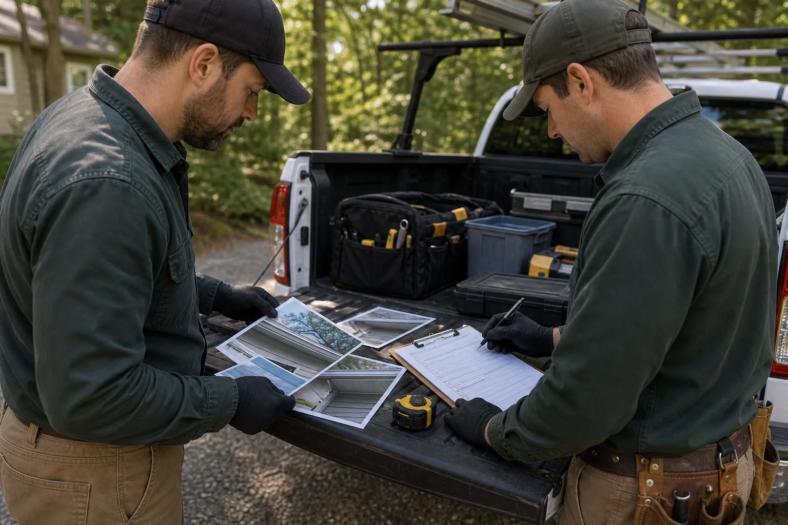
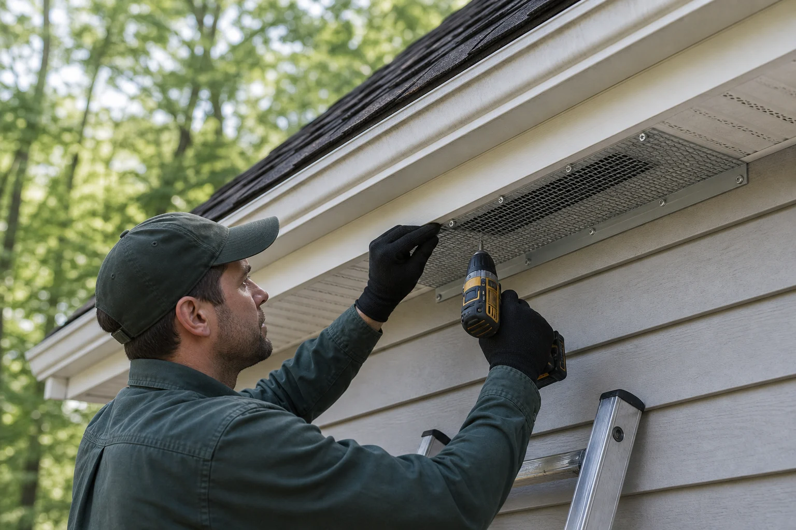

Confirm first
Species, timing, entry points, droppings, sounds, and damage patterns shape the right plan.
We help homeowners understand wildlife activity and request support for inspection, removal, exclusion, cleanup, and prevention.
A good response starts with the animal, but it does not end there. The structure, attic conditions, exterior gaps, sanitation needs, and future access points all matter.

Wildlife removal becomes more reliable when it respects animal behavior and building science at the same time.
Species, timing, entry points, droppings, sounds, and damage patterns shape the right plan.
Exclusion and removal should avoid trapping animals inside and account for seasonal young.
Repairs, guards, sealing, and exterior corrections help stop repeat entry after activity clears.
Odor, nesting material, droppings, insulation, and follow-up checks may be part of the full scope.

Each service path is written to help visitors describe the issue clearly, understand possible next steps, and know which details to mention when requesting help.